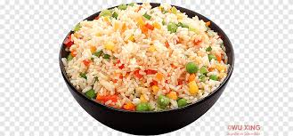

Fried Rice Recipes

Discrption:
This fried rice recipe only takes 15 minutes to cook and tastes just
like you get at your favorite Chinese restaurant. Leftover rice,
plus a couple of eggs, baby carrots, peas, and soy sauce is all you need.
Garnish with sliced green onions, if desired.
Fried rice is a traditional Chinese preparation of cooked rice, vegetables,
protein, soy sauce, and aromatics. An ideal use for leftovers, fried rice
is quick, customizable, and incredibly simple to put together with whatever
is in your fridge.
Ingredients:
- 2/3 Cup chopped baby carrots
- 1/2 cup frozen green peas
- 2 tablespoons vegetable oil
- 1 clove garlic, minced, or to taste (Optional)
- 2 large eggs
- 3 cups leftover cooked and chilled white rice
- 1 tablespoon soy sauce, or more to taste
- 2 teaspoons sesame oil, or to taste
Directions:
- Assemble Ingredients
- Place carrots in a small saucepan and cover with water. Bring to a low boil and cook for 3 to 5 minutes. Stir in peas, then immediately drain in a colander.
- Heat a wok over high heat. Pour in vegetable oil, then stir in carrots, peas, and garlic; cook for about 30 seconds. Add eggs; stir quickly to scramble eggs with vegetables.
- Stir in cooked rice. Add soy sauce and toss rice to coat. Drizzle with sesame oil and toss again.
- Serve hot and enjoy!
Back to Home Page